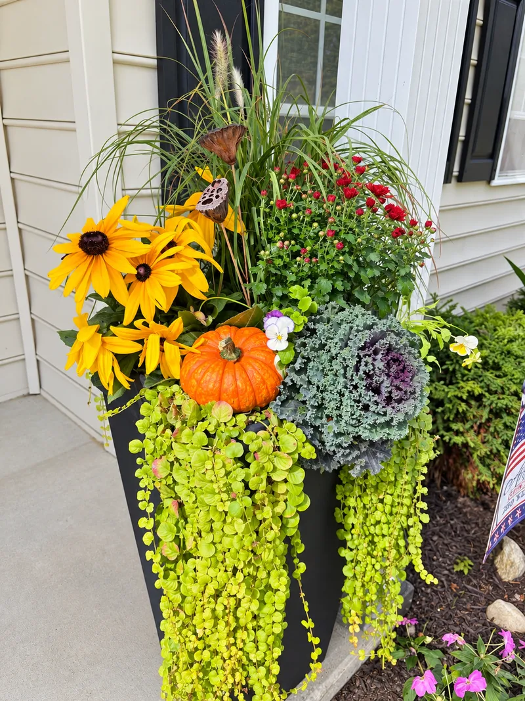
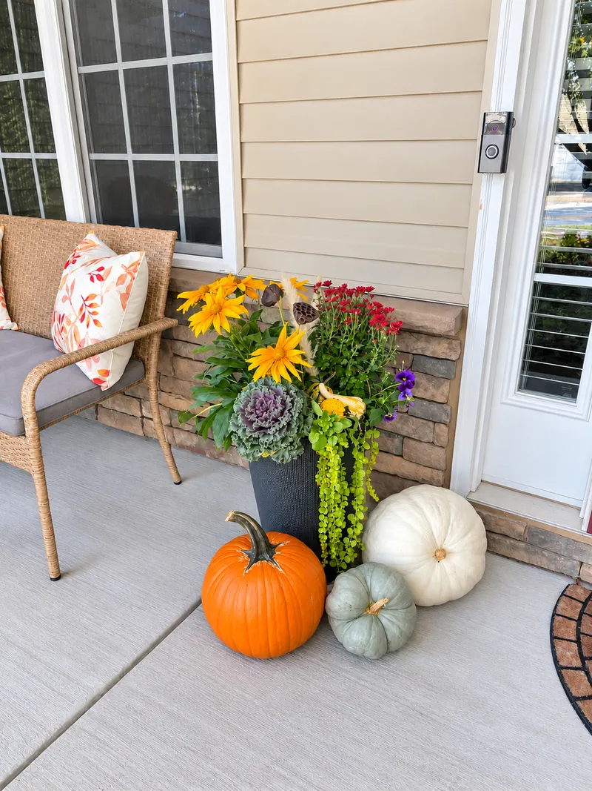
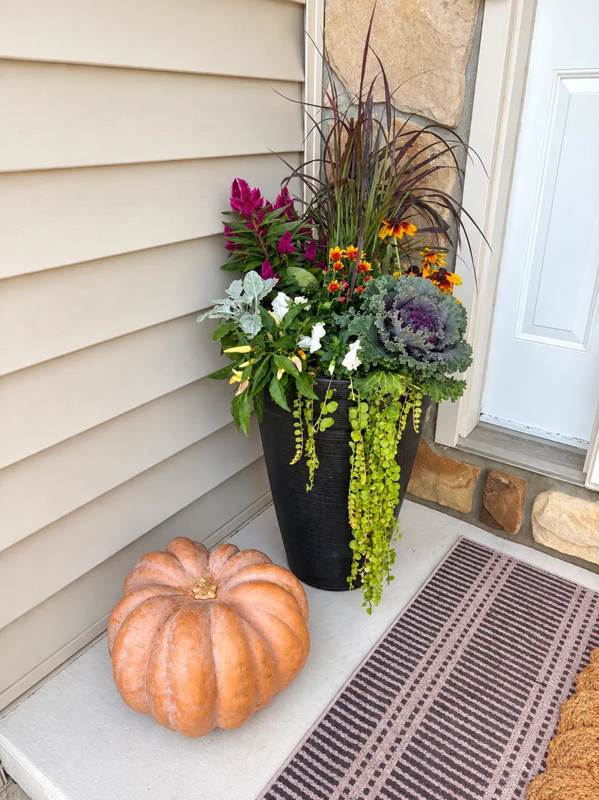

Custom Planters
Containers, hanging baskets, and window boxes designed for your sun, shade, and style. Thriller, filler, spiller, layered for full, overflowing color.
Custom planters · Seasonal swaps · Porch makeovers
We design and plant welcoming front porches with lush containers and overflowing baskets, then come back each season to swap in fresh arrangements, so you come home to something beautiful all year.



Your porch is the first hello. Let's make it unforgettable.
What we do
From one statement urn to a full entryway transformation, every design is made for your home, your light, and your style.
Containers, hanging baskets, and window boxes designed for your sun, shade, and style. Thriller, filler, spiller, layered for full, overflowing color.
Your containers stay put. When the season turns, we pull the old arrangements and plant fresh ones, so your porch is always at its best without lifting a finger.
A complete refresh of your entryway: planters, florals, greenery, and finishing touches pulled together into one cohesive, welcoming look.
Plants need a little upkeep to stay their best. Periodic visits to prune, deadhead, and fertilize keep your planters healthy and full between swaps.
How it works
Every project begins with a simple consultation so we can learn more about your space, style, and what you're looking for.
We'll thoughtfully design your containers and outdoor space with seasonal plants, colors, and textures that complement your home and personal style.
We source, deliver, pot, and style everything, then clean up so all that's left is the beauty.
Enjoy it! Each new season we come back and swap in a fresh arrangement: same containers, whole new look.
Four seasons of curb appeal
Your containers stay; the arrangements change. Here's what a year of seasonal swaps can look like.
Fresh, soft, and new: tulips, pansies, ranunculus, ferns, and trailing ivy.
Lush and overflowing: petunias, begonias, mandevilla, sweet potato vine, and Boston ferns.
Warm and harvest-rich: mums, ornamental kale, rudbeckia, grasses, and heirloom pumpkins.
Cozy and evergreen: fresh boughs, dwarf spruce, winterberry, birch poles, and lanterns.
Seasonal swap plans
Once your containers are in place, they stay. We come back as each season turns and replace the arrangements with fresh plants designed for the months ahead. No hauling pots, no shopping, no guesswork.
Ask About Swap PlansSpent and out-of-season plantings come out of your containers.
A fresh arrangement designed for the season, your light, and your style.
We leave your porch clean, so all you notice is the new color.
Let's get growing
Tell us a little about your home and what you're dreaming of. We'll get back to you to set up a free consultation.